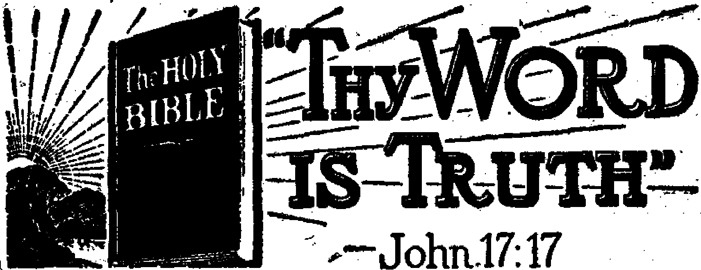

Contents
In Brief
Kentucky Mountaineers and the Four Freedoms 3
Harlan, Kentucky, a Scenic Paradise
TJie Mountaineer, an American Tradition
Corruption Usually Short-lived
Official Conspiracy in Action ,
Mayor Spfeads “Fifth Column” Jitters
Eighty-four Days in Slop-encrusted Jail.
. Officials Caught in Surprise Move
Officials Co-operate with Mobsters
In Haddonfield, “New Hague” (N.J.)
“Thy Word Is Truth”
The Manufacture of “Saints”
4
What the ’Smokers Accomplish
The Reward of a Servant
Presenting “This Gospel of the Kingdom” About Words
Theognostus of Alexandria v
22
23
24
28
30
Published every other Wednesday by WATCHTOWER BIBLE AND TRACT SOCIETY, INC 117 Adams St., Brooklyn 1, N. Y., U. S. A.
OFFICERS
President Secretary Editor
N. H. Knorr
W. E. Van Amburgh Clayton J. Woodworth
Five Cents a Copy
$1 a year In the United States $1.25 to Canada and all other countries
NOTICE TO SUBSCRIBERS
Remittances: For your own safety, remit by postal or express money order. When coin or currency is lost in the ordinary mails, there is no redress. Remittances from countries other than those named below may be made to the Brooklyn office, but only by International postal money order.
Receipt of a new or renewal subscription will be acknowledged only when requested. Notice of Expiration is sent with the journal one month before subscription expires. Please renew promptly to avoid loss of copies. Send change of address direct to us rather than to the post office. Your request should reach us at least two weeks before the date of issue with which it Is to take effect. Send your old as well as the new address. Copies will not be forwarded by the post office to your new address unless extra postage is provided by you.
Published also in Greek, Portuguese, Spanish, and Ukrainian.
OFFICES FOR OTHER COUNTRIES
England 34 Craven Terrace, London, W. 2
Australia 7 Beresford Road, Strathfleld, N. S. W. South Africa 623 Boston House, Cape Town
Mexico Calzada de Melchor Ocampo 71, Mexico, D. F. Brazil Caixa Postal 1319, Rio de Janeiro
Argentina Calle Honduras 5646-48, Buenos Aires Entered as second-class matter at Brooklyn, N. Y.»
under the Act of March 3, 1879.
The Animals’ Caretaker and Friend
■V
IN The Reader’s Digest Alan Devoe narrates a couple of instances in which wild beasts showed their dependence on man and their confidence in him. One was an instance of where a game warden found a skunk caught in a trap in his den. The warden- slowly pulled the captive out of the hole, meanwhile talking to him in kindly tones. Then he carried him twenty feet to a clearing, and placed his knee on the spring to work the little fellow’s leg free. It was a fearful ordeal for the skunk, but he emitted no stench. When released he sat down and for several minutes massaged his paw to restore circulation. Several times he tested it to see if it would bear his weight. Finally he found he could walk on it, looked solemnly at his deliverer for a moment, and then walked off into the brush, f
The second instance was that of a forest fire. A buck came upon two fire wardens, headed directly towards them, and then snorted and stamped the blackened ground. At length the wardens discerned that he wanted them to follow him. They did so and found that his fawns had been burned to death, but that his faithful doe, held to her post by mother love, had stayed by her young until her coat had been seared, her legs terribly burned and her eyes had been blinded. The buck had come to his divinely ordained source of help, man. As soon as she was dispatched he went on his lonely way.
A third story, not in the Digest, is that of a seal, stripped of his fur, that came to his tormentors, who had abused their position as the animals’ caretaker, and by his pathetic conduct so aroused their pity that they killed him. Wounded deer, when they were dying, have looked upon their killers with such reproach as to make old hunters for ever give up the chase.
“And in His name shall the nations hope.”—-Matthew 12:21, A.R.V.
1 " ----1 — ——- ■ I . , I ■ ,--------—---------—--■--rh--_~------- ----"''ll--- I I * ■ ' > ' ■ * * ---------—II ■ ,1 i »i»i t I— I , , , .III 1| 1-1 mil.........
Volume XXV Brooklyn, N. Y., Wednesday, August 16, 1944 Number 650
Religious Intolerance Driven from
tt'XTOU folks have done a much big-
-t ger thing for the one hundred thirty million people in the United States than you did yourselves as individuals,” \ wrote a well-known attorney of Somer-\ set, Kentucky, recently to one of Jehovah’s witnesses in the “Blue Grass State”. “The fight you folks waged forced the Supreme Court of the United States to take back water in some cases, and to make new announcements in other cases. You folks have done much for the cause of human freedom, liberty, and right to worship God according to one’s own conscience, and the right of peaceful assemblage. The people generally owe your organization much, because you have done much for them. Your fight won for them the above-mentioned rights. Your fight helped a whole lot of people who did not deserve it.”
In the mountain section of southeastern Kentucky, a place traditionally famous for its bloody feuds, a “fight” is not unusual, but the “fight” that this honest lawyer was referring to was one of the most unusual battles in the history of the Kentucky mountains, and in timO’ to come will be recognized as one of the most important. This was a fight of the people of Kentucky against a subtle and
Jehovah’s witnesses In the rugged mountain section of Kentucky have fought fiercely to maintain their freedom and to break the shackles of dictatorial intolerance which certain officials in Harlan county and vicinity sought to saddle upon them. This Is the absorbing story of their victorious four-year struggle, painted on the vivid background of the nation’s most colorful locality.
Nation’s Most Colorful Locality
crafty attempt by the enemies of liberty to destroy the cherished rights of freedom of expression and freedom to worship Almighty God. No two things are dearer to the heart of a Kentuckian than these two freedoms, and it is little wonder that they fought with such determination, using all possible legal means to protect these rights.
The battle began in 1940 when a group of small-scale politicians in Harlan decided to “run Jehovah’s witnesses out of the county” by means fair or foul. They soon exhausted the fair means and resorted to the foul. What took place thereafter could happen only in the mountains of Kentucky. The staunch and unflinching devotion to the principles of right and righteousness maintained by these citizens of the mountain country throughout the controversy is indeed an eloquent tribute in itself. It is only necessary to orient the account by a general description of its colorful and fascinating setting, '■l
Harlan, Kentucky, a Scenic Paradise
Nestling in the heart of the Cumberland mountains, Harlan county embraces within its borders the highest peaks in Kentucky. Crystal-clear mountain streams vein the rugged surface of the
timber-covered mountainsides studded J 'n _ ■■ '■ p 1 ■
with shimmering white waterfalls and towering rock formations. The mountains slope down into verdant valleys unbelievably enriched by centuries of silt. Here the. scenic beauty of America finds some of its proudest perfection. The town of Harlan is no less picturesque and interesting than its splendor-ous setting. The towfi, located in the valley between the Big and the Little Black Mountain, at the confluence of the
Z €
three forks of the Upper Cumberland river, was a backwoods village for more than 100 years after its settlement in 1819 by a small company of Virginians under the leadership of Samuel Hoard (Howard). It was almost isolated from the rest of the world until, in 1910, the Louisville and Nashville Railroad was induced to build a spur track to the town to exploit its rich coal and lumber resources.
The hearty mountaineer people of this section of,the country have been the subject of many a journalist, and the butt of countless jokes, almost all of which grossly misrepresent the facts and portray an exaggerated picture of the rural Kentuckian. Though they may not be as learned in the so-called culture of “modern civilization” as those in the urban areas, they are mentally keen and uncommonly alert. The debauchery and filth of large cities is wholly foreign to the pure atmosphere and vigorous life in these virgin mountainsides. Most of the people are honest, frank and trusting, which characteristics, strangely enough, have been misconstrued by the unfamiliar city dweller as an indication of ignorance and crudeness. But, contrary to this mistaken notion, the good people of the Kentucky mountains are, as a whole, one of the most solid blocks of wholesome Americans in all the Union. Their concept of honest, fair dealing and respect for Almighty God is far above that of more “civilized” people of the country, Toward strangers and friends alike, their humble and generous spirit is unequaled.
In 1875 the population of Harlan was 10 families. Theirs was a rough existence-, but nonetheless a happy one. Elmon Middleton, in his book Harlan County, gives a vivid description of the environment that gave birth to the present generation:
Surrounded with mountains which formed almost: an impenetrable barrier, with inadequate roads that were little more than animal paths, impassable most of the year, the inhabitants were deprived of the newer methods of living that were rapidly developing in the more accessible regions of the country. Hedged in as they were, they retained until the early twentieth century the old methods and customs brought into their country by the early settlers of the eighteenth century, while, in the meantime, the rapid development of the high standards of living was spreading all about them, even far to the west of their secluded habitation. Organized law was *
slow to rise into ascendancy in this sparsely settled region. Each man’s honor, together with his skilled use of his rifle and backed up by the other members of his family, remained for a long time the highest law he recognized, while the county government was slowly gaining in power over the clannish settlers.
r ■ .■ _____ । *
As Irvin S. Cobb Saw Kentucky
Kentuckians are tremendously proud of their state, and always unhesitatingly show a spirit of aggressiveness when it is criticized. As the late Irvin S. Cobb observed:
Hint that so far as the eye can observe, Kentucky seems to lag behind neighboring states in the matter of a definite good road program. Again his reply is ready: why, when once he has halted anywhere at all in Kentucky, should a man crave facilities for traveling further ? Isn’t the spot where he has •stopped a sufficient earthly paradise for a normal man’s desire? ■ I. 11
Mr. Cobb gives a colorful description of this mountain section of Kentucky;
“r '
The eastern end of the state is the mountain-I „ ■ "
। ous or perpendicular end. Here, from the ‘ beginning of things until comparatively recently, resided the congenital feudist and the incurable moonshinist. The latter still exercises his hereditary calling in a cave or i . .
| creek up a cove, with a measure of corn to J feed his still, and a mossy place under a tree for the customer to lie down on after-ward; but the gentle bushwhacker has almost j entirely quit whacking. Either he is taking a postgraduate course in chair bottoms at
J the Frankfort penitentiary or he has been i fatally “forty-foured” and now sleeps in the ; family burying ground on the slant of the , Cumberland hills, with his booted tbes stick-( ing up at the lower end of the mound to save the cost of a footstone.
s But however accustomed he may be I to the use of his rifle on his neighbor, the Harlan mountaineer is very tender-
1 hearted and kind. The story is told of a stranger that, one cold day, went into the grocery store at Harlan and pushed his way to the stove in the middle of the room. A dog happened to be sleeping on the floor where he wanted to stand and he kicked the animal to one side. Immediately, a tall, lanky mountaineer leaning on the counter straightened up and, glowering at the stranger, declared menacingly, “Hyar, stranger, if you kick that dog agin, in twelve months from now you’ll be dead exactly one year!”
Unlimited hospitality is the creed of the mountains. The best that the roughest cabin perched precariously on a hillside can offer is none too good for a traveler who may need overnight shelter or a meal. In spite of the fact that much superstition and religion have blighted the otherwise peaceful life of the mountaineers, they are still a reverent and God-fearing people willing and anxious to learn of the teachings of Christ.
Jehovah’s witnesses, carrying the message of Christ’s kingdom into the isolated rural areas, seldom find a house
where' they are not welcome. Whether the people are moonshining, feuding or working, they are nearly always glad to lay aside what they are doing and listen to Jehovah’s witnesses tell of a better condition on this earth. Almost invariably the minister is treated with the greatest respect and concern by all members of the family. T. - > " 1 L - - — '
One of Jehovah’s witnesses who spent many months calling on the people' in this mountain territory relates an interesting experience he had while calling from house to house in a valley near Harlan where a feud was in progress. Most of the residents of the valley were “neutral” in the feud, and even though the sharp ring of rifle fire between the feudists could occasionally be heard above the sound of the Bible lecture * ■
being played by the minister on his portable phonograph, the “neutrals” would never seem to notice and would make no comment at all as to the merits of the controversy that was raging near by. To have done so would have meant a violation of their neutrality, perhaps a fatal violation.
Several days later, when the shooting had subsided somewhat, the minister called at the cabin of the leader of one faction of the feudists. He was cordially invited to step in. Rifles and guns of various descriptions, carefully “primed” and loaded, were still about the room. Of course, the mountaineer had already “heered tell” that one of Jehovah’s witnesses was in the valley, and his delight at having the minister as his guest was unconcealed. The mountaineer immediately dispatched his wife to “fetch a couple chickens”, and one of the older children to “tidy up the younguns”. It was suppertime, and no excuses could prevail upon him to let the minister depart without his supper. The meal was served according to the strict rules of mountain formality, which forbade the wife or the children to eat at the same e f
table, while the minister was discussing the purpose of his visit with the man of the house. After the meal/the .mountaineer and his wife ushered the minister into the front room of the cabin, where an eager discussion of the Bible proceeded with obvious pleasure. The children were brought in and were allowed to listen to the discussion, but only upon a strict condition of silence. For the time being, the feud was completely forgotten.
It is interesting to note that Harlan county is one of the few counties in the United States where prohibition against liquor is rigidly enforced, despite the fact that Kentucky is famous for its whisky and Harlan is located in the heart of the “moonshining district”. The reason for this is born of long and bitter experience. In times past, whisky has been the cause of much of the feuding and bloodshed among the people. Furthermore, the mountaineers were never very careful to obey the federal statutes regarding the distillation of whisky, and there were endless prosecutions. In his own peculiar and frank way; he would argue/“The land’s mine; the crop’s mine. Why can’t I make whisky the same as bread?” To avoid all this difficulty, local prohibition laws were enacted and enforced, but these laws haven’t completely discouraged the mountaineer’s love of whisky.
Harlan politics is just as distinctive as their prohibition laws. In the democratic south, they have traditionally voted republican. When the Civil War divided the north and south, the people in Harlan county found themselves likewise split. They were divided into three groups: the Confederate sympathizers, the “armed neutrals”, and the Unionists. Although no major battle took place in Harlan county, skirmishing parties from the opposing armies of the Confederates and Unionists soon discovered that in certain valleys in Harlan county they Were regarded as friends, and on the other side of the ridge, as foes. In jinfriendly territory the soldiers invariably were harassed by uncommonly accurate rifle fire from ancient-type weapons in the hands of hidden mountaineers.
The trusting mountaineer is altogether too prone for his own good to accept the demands of his leaders rather than to reason out the matter for himself. He is saved only by his own astute sense of perception, which usually stops corruption before it gets too far.
This spirit of meekness has caused the mountaineer much difficulty and sorrow in times past. Many times their leaders have wrongfully inflamed them to mob spirit to commit acts as vigilantes against certain individuals in the community, only to have it later develop that the leaders were only grinding their own axe, and that the victim was innocent of wrongdoing.
As will be seen, certain politicians in Harlan, inspired by religious intolerance, sought to capitalize on this very characteristic of the people in an effort to stamp out the work of Jehovah’s witnesses in that town. But the politicians forgot to take into account the fact that the people of Harlan are (godfearing people of good-will, and religious persecution has never had and never will have any toleration in their county. The shrewd, earnest and successful fight of the people against this effort to limit their freedom to worship God is now a part of the history of Kentucky.
In 1940 the Harlan company of Jehovah’s witnesses was composed of a congregation having a regular attendance of between 20 and 25 persons. Most of these persons had lived in that section of the country all their lives, and, as is the case with towns the size of Harlan, the smallest details of their affairs were generally known in the community. Furthermore, there was nothing secret about the meetings of the congregation. Everyone knew that Jehovah’s witnesses
[ met twice each week in a room furnished j to them by the county officials in the [ local courthouse, for the purpose of holding regular studies of the Bible with | the aid of Watchtower literature. For ; months these meetings were widely ad-\ vertised throughout the county, and it ‘ is safe to say that there was no other gathering in Harlan that was better i known among the people.
The fact of the matter is that the meeting was becoming too well known, and liked, to suit the fancies of Harlan’s mayor, Dr. L. 0. Smith, and his chief henchman in office, Daniel Boone Smith, ; the “Commonwealth’s attorney”. As both these men later admitted, they considered themselves the “higher powers” in that locality, and as such the exclusive ; repositories of Harlan county “law”. Anyone who might be so indiscreet as to i doubt the limitless authority of this | sovereign office usually found himself I the turnkey’s guest in the city jail, on » one charge or another. These officials ! had always been rather skeptical of the well-organized and progressive activities of Jehovah’s witnesses, but it was not
I f
> until they discovered that Jehovah’s witnesses were telling the people of God’s purpose to establish a righteous government for the benefit of men of good-will on earth under the kingship of Christ Jesus that the matter became a definite issue. To them, this was not only rank apostasy, but was open insurrection, and they proceeded to deal with it accordingly.
Just about that time the local newspaper came out with the headlines concerning the capitulation of the government of France to the Nazis of Germany, and this afforded the opportunity that the officials needed to inflame public opinion so as to smoke-screen their real purpose. Why not make Jehovah’s witnesses the public scapegoat for this adversity of the war? Why not charge them with treasonf “His Honor” turned pale at the sheer genius of his own idea, and then, in a frenzy of excitement, forthwith launched his campaign to whip up the public passion against Jehovah’s witnesses.
*
Harlan Gestapo Sweeps Down
Accompanied by a small task force of deputies, the mayor descended on the home of Mr. Louis Beeler, a long-time resident of Harlan and one of Jehovah’s witnesses. Finding Beeler not at home, he ordered the deputies to loot the house for anything that looked as if it might pertain to Jehovah’s witnesses. Then, wild-eyed, he bounded off to search for Beeler, screaming hoarsely to everyone he met along the way that he was tracking down a gang of “dangerous German spies”. He soon found Beeler walking amiably along the street, and immediately placed him under arrest. Bellowing so that everyone within a two-block radius would, be sure to hear, he demanded that Beeler tell who was the “leader of Jehovah’s witnesses”. Unhesitatingly, Beeler said that Christ Jesus was the only leader of Jehovah’s witnesses. At this the-mayor increased the intensity of his obscenity and deprecations and dragged the bewildered Beeler back to his house, where the deputies were standing triumphantly over a stack of books, papers and phonograph records they had illegally and wrongfully taken from the house.
As a dramatic flourish for the benefit of the surprised crowd that had gathered, the deputies then cautiously searched Beeler’s person as if they expected to find a machine gun or a grenade cached away in a hidden pocket. Their search produced nothing more dangerous than a lead pencil. At this the mayor gasped, as if that was indeed a very suspicious circumstance, and then angrily started to hustle his prisoner away. But an actor never leaves the stage, if he can help it, without a final grandstand play; so the mayor, just as if he were answering a curtain call, suddenly stopped and announced that he was an “ex-service man” and that he was going to force Beeler to salute the flag. Beeler started to explain his regard and proper respect for the flag and the things it symbolized, but he was cut short by several vicious blows to the face that staggered him.
Dazed, Beeler was dragged on to the city hall and shoved into the mayor’s office, where he was violently grilled and abused further. Quoting fropi Jesus’ words at Matthew 18:6, Beeler finally warned the mayor, “But whoso shall offend one of these little ones which believe in me, it were better for him that a millstone were hanged,about his neck, and that he were drowned in the depth of the sea.” The mayor leaped back, snarling that no one could threaten his life and get by with it. Pulling out a blackjack he advanced on Beeler, fuming, “Don’t give me any more of that d---- stuff! Hl blackjack your ears
down!” Now in a demoniacal rage, the mayor finally ordered him to be thrown into a, cell, and, evidently recalling the drama of Pilate’s commands concerning Jesus’ grave, additionally directed the chief of police to put a chain and padlock around the cell door and post a guard over it 24 hours a day to make certain that he did not communicate with anyone. 4
Official Conspiracy in Action
Shortly Mr. Lindell Carr, one of the local congregation of Jehovah’s witnesses, appeared at the mayor’s office to see what could be done to secure Beeler’s release. Instead of giving him any encouragement in this connection, the mayor challenged him to try to secure the prisoner’s release, and boasted that he intended to completely stop the work of Jehovah’s witnesses in Harlan county. Later that evening the police raided Carr’s home, arrested him for “sedition”, and threw him into the same cell with Beeler.
On Monday, the following day, the friends of the two prisoners vainly searched for legal counsel, but found that all the lawyers in the vicinity had! been intimidated to the extent that noil one was willing to handle the case. Atl the “examining trial” the mayor sta-| tioned himself at the dooj of the courthouse to trap any of Jehovah’s witnesses | that might come to court to assist Beeler' and Carr. Elihu Hurst, a resident of j Harlan for sixteen years, and the “com- i pany servant” or minister in charge of ] the Harlan company of Jehovah’s witnesses, was the first to walk in. The j mayor immediately pounced on him and 1 jubilantly crowed, “Consider yourself ] under arrest, Elihu!” The hearing was] postponed until the next day and Hurst was thrown into jail with the other; two prisoners.
The highlight of the hearing in the'] court the next day was a speech by' Mayor Smith in which he “revealed” that; the literature Jehovah’s witnesses were distributing was “Communistic” and that they were a “fifth column” in the county. Evidence ? He grimaced wryly and picked a carefully wrapped package out of his case. “This,” he confided, “was found in Elihu Hurst’s house last night, and is not only evidence, but is proof positive!” With that, he gingerly unwrapped the package and held up before the startled gaze of the judge five ordinary road maps of the filling station variety. He pointed out with a nervous finger that these maps had been marked into blocked - “territory sections” which included not only the residential and business area of Harlan proper, but also all the roads, highways and coal mines in the vicinity. Elihu Hurst explained that he had divided the maps into territory sections to enable the local company of Jehovah’s witnesses to conduct their house-to-house witnessing activities in a systematic manner. The mayor immediately branded this as a subterfuge, and in a voice that shook with all the desperation of a man watching a fuse burn close to a charge of dynamite under his feet, he declared that this was a plot of a foreign enemy agent to blow up all the bridges, roads and mines in Harlan.
“I aim,” he blustered, “to run down all of them and prosecute them to the full extent of the law!” The mayor’s conception of “the law” was well illustrated by his next statement addressed to Jehovah’s witnesses, “We are going to cause you to salute the flag if we have to get a mob to do it with!”
That afternoon three more of Jehovah’s witnesses were arrested and thrown into the miserably hot and unsanitary jail on charges of sedition.
Matters were now reaching a fever pitch in the town, and the mayor, determined to excite the people even more, rushgd to his office and dictated a desperate appeal to the governor of Kentucky. In grossly exaggerated terms he informed the governor that he had uncovered a gigantic plot engineered by Jehovah’s witnesses to blow up the bridges and roads in the county, and had actually, confiscated the maps they had prepared for this purpose. He added that he feared a great disaster and implored the governor to send in armed troops to guard the roads, bridges and mines from these dangerous “spies”. Fortunately, the governor knew the good citizens of Harlan county well enough to realize that they would not dynamite their own property, and he refused to take action, but probably put the letter in his “crank correspondence” file.
Undaunted, the mayor next called in a local newspaper reporter and gave him a “press release”. He announced that he was organizing a vigilante group of all young men in the county to combat “fifth column activities” in Harlan
J* county, and he urged all legionnaires and other “patriotic citizens” to join his mob. Still not satisfied, he telephoned police officers in surrounding communities in his capacity as a reserve officer of the army, and warned them to be on
the lookout for these “fifth columnists” that had “drifted in from New York”. In response to further demands, the State Highway Patrol had to send a special investigator to see the mayor, who was now urging them to assign a . patrol car to cruise the highway leading into Harlan and keep a close watch on the bridges and railroads, particularly during the time of the sedition trial of Elmer Hopkins. With all this clamor, it is small wonder that some of the people in the neighborhood began to cast jittery glances out their windows at night before retiring.
Harlan's “Higher Powers”
Stoop to Conquer
During this time all of Jehovah’s witnesses except one were still in jail, unable to post appearance bonds set at $5000.00 each. All efforts to secure legal assistance failed, and their plight looked hopeless. Finally the prisoners were brought before the county court for another “hearing”. But despite this cheering designation of the proceedings, the defendants soon realized that they were not the ones who were going to be heard at all. Instead, the prosecuting attorney, Daniel Boone Smith, commandeered the occasion. Drawing himself up like a pouter pigeon, he began his revilement of Jehovah’s witnesses, their beliefs and their God in the same old nauseous pattern that hundreds of boneheaded bigots before him have used. Sneering at the Bible, he asserted that he could prove almost anything from the Scriptures. “I can take the Bible,” he scoffed, “and prove that Jesus Christ was a horse thief!”
As he drew near the climax of his railings, he suddenly snatched up the Bible and read the passage at Bomans 13:1 to the court, “Let every soul be subject unto the higher powers. For there is no power but of God: the powers that be are ordained of God.” Then, interpreting the Bible in the same manner as he would have to in order to
prove that Christ Jesus was a horse thief, he declared that the “Harlan County Law” was the higher powers that Jehovah’s witnesses and everyone else had to obey. The judge was convinced, and he forthwith set the bond of all the I 1 .
defendants at $10,000.00, an obviously impossible sum. The prisoners were hauled back to the jail.
Several days later a relative of one of the men appeared and offered to pledge his property for the bond. Although it was worth more than $90,000.00, it was large enough to secure the release of only one prisoner, Elmer Hopkins, and the rest were held in jail. As soon as he was released, Hopkins immediately set about trying to secure the release of those still imprisoned. But the mayor had already anticipated that Hopkins might make some such attempt, and promptly had him re-arrested on the same charge and thrown back into jail. It seems that during the time Hopkins had been out someone had mysteriously delivered a copy of Kingdom, News, a publication exposing religious gangsters and mobsters, to every home in Harlan. The mayor had read the article, appropriately applied it to himself, and was black with rage. He accused Hopkins of having made this attack on his character, and vowed to “fix” him. However, the mayor was doomed to disappointment. When Hopkins was brought before the court for arraignment, there was absolutely no evidence that he was the one who had distributed the papers, and the judge was forced to turn him free.
By this time the Watchtower Bible and Tract Society had arranged for an attorney to come from Atlanta, Georgia, to assist the beleaguered Christians. This attorney managed to persuade a local lawyer to co-operate with him in filing habeas corpus proceedings in the county court, and, after several days’ more delay, the prisoners were again taken from their cell into court, where they were given brief opportunity to plead for their freedom. Needless to say, however, their pleas fell on deaf ears, and once again they were thrown back into confinement.
During the court proceedings the local attorney that had been retained to represent the prisoners started to say something in behalf of his clients. Boone Smith, the Commonwealth’s attorney, leaped from his chair and bawled fiercely, “You shut your mouth up! I’ll see you down on the street. You just keep on monkeying around. I helped you make a living, and I will see that you don’t handle any more cases in my court!” Unfortunately, the bluff was successful and the attorney withdrew from further representation of Jehovah’s witnesses, leaving them without any local counsel whatsoever.
All of the local agents of professional bonding companies were similarly intimidated, and diligent effort to secure bond failed. It was apparent that the four men were unable to raise the exorbitant appearance bond themselves. This situation was well known to the court at the time the bond was set, and with the further knowledge that the next regular term of the criminal court would not be held for three months, which meant that the prisoners would have to remain in their unspeakably foul cell all summer awaiting trial unless bond was posted. However, after indictment was returned on August 21 the $10,000 bond was reduced by half, thus enabling them to raise bond and be released, after 84 days in the slop-encrusted cell. When September came Boone Smith deliberately secured a three-month postponement of the case, well knowing that he did not have any evidence with which he could convict them of sedition.
The news of the crusade against Jehovah’s witnesses spread rapidly. Only a few days after the trouble began at
b- .
¥■
< /Harlan, the officials at Somerset, Ken; tucky, a small mountain town not far from Harlan, proceeded to clap Mr. Frank Speerless and his wife into jail on the same pretext that Mayor Smith / had used. There was no evidence against the pair, and, to avoid any risk that the J court might dismiss the charges on that > ground, the prosecuting attorney,’ Rus; sell Jones, appeared at the “examining ' trial” with a special assistant for the [ occasion, one Gladstone Wesley, an > alleged representative of the so-called i “American” Legion, and leading pro: ponent in the Kentucky legislature of the sedition statute under which the i arrests had taken place. The reason for is. Wesley’s presence was soon manifest. [ Shortly after the trial began he took the floor and began in true rabble-rousing f fashion to shout fabulous misrepresenta-[ tions concerning the beliefs of Jehovah’s [ witnesses, and to ridicule same with f boisterous insults. “We are satisfied with c this government,” he screamed in tones I most nearly resembling an air-raid siren, j “and we don’t want any government set [ up by Christ!” His face contorted with 'j malice and rage, he finally pointed at the defendants and shrieked, “And these two ; people ought to be thrown in a dungeon until the flesh rots from their bones or
• be put in the electric chair!” The proserating attorney, catching the spirit of ; the occasion, had a ^better idea’; in childlike gibberish he suggested that all of Jehovah’s witnesses be put in a leaky boat and shoved out to sea.
With the violent clamor of these two expert rabble-rousers becoming louder by the minute, it is difficult to say what might have happened had it not been for the kindly intercession of a local freedom-loving and law-respecting attorney who volunteered his services just at the right moment. Righteously indignant, he severely lectured the would-be mobsters on the necessity of maintaining the rights secured to the people by the Constitution and eloquently demonstrated that the prosecutors were the ones who were guilty of undermining the law, and not Jehovah’s witnesses. This restored reason to the proceedings to some extent, but, nevertheless, the judge viewed the charge of preaching the gospel of Jehovah’s kingdom so tremendous that he set their bond at $5000.00. For seven grueling weeks Mr. and Mrs. Speerless were held prisoners, unable to furnish this bond, while the officials continued to intimidate and threaten all persons suspected of sympathizing with them.
Just at this time Jehovah’s witnesses were holding a nation-wide convention at Detroit, Michigan, and a telegram of greetings, sent from the Pulaski county jail by Mr. and Mrs. Speerless, was read to the assembly. One of the convention-ers, Mr. Everett Henry, heard this telegram read and resolved to stop by the jail on his way home, give these two ministers a word of encouragement, and see that they were provided with the new publications released at the convention. Upon his arrival he found that the police had taken away all the Watchtower literature from the prisoners, and had purposely imposed the strictest sort of confinement. Under the watchful eyes of the guard, he was unable to hand them the new releases during his visit, but, after he had finished, he slipped around to the back window of the jail and passed the literature through the bars to them, much to their delight.
Had he given them a hack saw, a file, a gun or a bomb, the effect would not have been greater than it was when the constable a few minutes later discovered what Mr. Henry had done. Immediately a general alarm was sounded and all police in the area were put on the alert to intercept him. Soon the report came from a town in the next county that they had caught Henry and were bringing him back. Acrid-smelling disinfectant was sloshed about over the vermin-ridden floor of one of the cells in the county jail, and in a few minutes the door was slammed with a sound of finality behind the unfortunate Henry, who joined Speerless and wife for a prolonged stay in the filthy jail.
Finally Henry was brought before the court for the routine “examining trial”. The charges were so manifestly preposterous that a local Presbyterian preacher, C. H. Talbot, not knowing where the tide of persecution might stop, asked leave of court'to say a few words concerning “religious freedom”. Leave was granted, and he sensibly urged the court to beware of hysteria and avoid destroying freedom for all the people in Somerset. To his great surprise and mortification, he was promptly labeled as a “fifth columnist” by the leaders of the persecution campaign, but before he could be clapped in jail along with Henry on charges of sedition he restored himself to good graces by making a statement in the local newspaper, “The papers said I defended the Witnesses. I didn’t do that at all. I don’t like those people; I don’t know anything about their doctrines; I wish they’d go away and I’d never have to hear of them again. All I did was to say that I didn’t think you could jail a man for the way he worships.”
The witch hunt for Jehovah’s witnesses was now on full blast. The utterly unreasonable and villainous temper of the officials is well illustrated by their vile treatment of Willie Johnson, a local sharecropper and man of good-will toward Jehovah God. Johnson had lived in Pulaski county for 28 years, and no one in that section had a better reputation for honesty and hospitality than he did. He was unfortunate enough, however, to have for a neighbor one Joe Phelps, a deputy sheriff. Johnson had heard that the sedition trial of those being held in jail was.to come up shortly in the circuit court, and he inquired of his badged neighbor when it would likely be. During the course of the conversation, he gave the deputy a copy of the Watch tower magazine so that he could see for himself that there was nothing seditious about it. Instead of. reading it, the deputy immediately went before the grand jury, obtained a warrant for Johnson’s arrest, returned and hauled Johnson to jail. Like the others, a $5000.00 bond was also set for his release; a hopelessly exorbitant sum.
Johnson was never able to post the bond, professional bonding companies, because of fear of the officials, refused to lend their assistance, and he remained in jail for six consecutive months. He was turned loose only when the charge was withdrawn.
The situation in Kentucky was admittedly desperate, and was rapidly growing worse. To all appearances, law and justice had been entirely throttled by the chicanery of corrupt officialdom, or at least these outlaws in office thought they had suppressed it. But they didn’t reckon with the resourcefulness of the determined witnesses of Jehovah, whose general legal counsel, Hayden Covington, had taken charge of the situation. Instead of giving up and waiting for the December term of court, and the pleasure of Daniel Boone Smith, Covington immediately filed a complaint and petition in the United States District Court, and, under the provisions of a special statute, asked that these lawless officials be brought to account and thereafter enjoined from further depriving Jehovah’s witnesses of their civil rights secured by the Constitution. From then on things took place rapidly; so rapidly, in fact, that the startled officials hardly knew what was happening to their finely contrived scheme to banish Jehovah’s witnesses.
A special three-judge federal court was promptly impaneled at London, Kentucky, to hear the trial of the case. All of Jehovah’s witnesses who had
been arrested ini Harlan and Pulaski counties were on hand to give their testimony. Even Willie Johnson, who was still being held in the Pulaski county jail, was brought into court by special order, bound hand and foot with heavy iron manacles and under the attentive eye of a husky guard. The distraught officials realized that they were caught in a tight spot and were prepared fiercely to defend their actions, but Jehovah’s witnesses were equally determined to see that the whole story was brought into the open and the people’s right of freedom of worship preserved.
During the first day’s session of court I 93 exhibits were offered into the evi-I dence, representing specimens of each I publication that had been confiscated by the police from the homes of Jehovah’s witnesses. Then, one by one, each of the persons who had been arrested was put on the witness stand and questioned as to the circumstances of his arrest and the opposition of the officials to Jeho-. vah’s witnesses.
K _
! ‘That New York Lawyer* Blamed
j The attorney general for the Common-i wealth of Kentucky had been called in by the officials to defend the case in their i behalf, and he savagely attempted time and time again to confuse the witnesses by clever and vigorous cross-examination, but each time he failed. The honest and direct way in which these witnesses answered the questions of the attorney general only added to the already damning evidence against the officials.
“Didn’t your teaching and distributing of this literature arouse people to the danger that you would be mobbed?” thundered the attorney general at Louis Beeler.
“No, I don’t think it was the literature,” Beeler calmly replied.
“What was it that inflamed the people against you, if it wasn’t the literature ?”
“It was the mayor and them going up .and down the street hollering.” .
Obviously nettled by this embarrassing reply, the attorney general moved closer to the witness, and, pointing his finger at Beeler, snapped, “I will ask you if it isn’t true that the attitude of the people of that section who had been aroused by the dissemination of this literature was such that you people who had been spreading it around were probably safer in jail than out?”
“No,” drawled Beeler, “I never did see anyone but the mayor who did any ripping and running around and hollering; that was all I saw.” '
With that the attorney general exhaled deeply, sat down, and let the other witnesses go by without cross-examination.
As his last witness, Covington called Daniel Boone Smith, the prosecuting attorney, to the witness stand. Smith cockily admitted that he had prepared the indictments charging Jehovah’s witnesses with sedition, but his feathers wilted when Covington demanded that he read to the court the material in the 93 exhibits of the Watchtower literature upon which h<3 based these charges. Coloring visibly, Smith tried to sidestep the demand by claiming that his file of papers on the case had been thrown into the fire in the fireplace in his home by his young son in the middle of August. This excuse was not readily accepted by the stern federal judges, since it was painfully obvious that there was not much likelihood that the Smith household would need a fire to warm the house in the middle of a hot summer.
To save the disconcerted prosecutor obvious embarrassment, the court adjourned until the next day, instructing the witness to be prepared then to point out just what was seditious about the literature. Weakly, Smith objected that he dreaded the task of having to read all that literature, but the court had already adjourned and he had no alternative except to gather up the literature and stagger out of the courtroom under the load.
The town was small and there was only one hotel, in which all the partici-
pants at the trial had found lodging. That evening the light in the room occupied by the prosecuting attorney burned far into the morning hours, as he searched in vain through the literature for something that might sound seditious. To the great amusement of the lately imprisoned witnesses, the exasperated voice of Daniel Boone Smith could be heard through the thin partitions, blaming the mayor for their increasingly uncomfortable plight, to which the glum reply came, “Well, how was I to know they would bring in that d----lawyer
from New York!”
I
Vindicated by Federal Court
In court the next day, the erstwhile spirited prosecutor made a lame attempt to read “seditious passages” from the literature, but that which he read was so palpably legitimate that he finally blurted out that he was unable to produce anything more incriminating. Nevertheless, he declared that it was his intention to continue the prosecution of Jehovah’s witnesses until he was stopped by some judicial decision.
Jehovah’s witnesses then rested their side of the case, and the attorney general called his star witness, Dr. L. 0. Smith, the mayor of Harlan, to testify. Among other things, the attorney general asked the mayor whether or not he had ever demanded that any of Jehovah’s witnesses salute the flag. Evidently recalling the blackjack episode in his office and other similar instances where he had abused Jehovah’s witnesses, Smith admitted that he had used “some threats” with his demands in this regard, and then, adjusting the halo which he imagined was above his head, he justified his villainous brutality by saying that he acted only from motives of “love” for his dear friends whom he wanted to prevent “getting into trouble with this un-American stuff”. On cross-examina-tion, the harder he was pressed about his participation in the plot against Jehovah’s witnesses, the more infuriated he became. After a series of rapid-fire questions, tending to expose his agitation of the public, Covington queried, “You were pretty sore, were you not?”’
“Oh, not as mad as I am now!” was the explosive retort.
After the examination of a few other witnesses, the case was then submitted to the court. But before adjournment the court required the attorney general to stipulate that there would be no further arrests of Jehovah’s witnesses under the statute until the court had opportunity to enter a final judgment in the case, and also that he would arrange to have Willie Johnson released from the Pulaski county jail on bond. The Harlan officials saw the handwriting on the wall forecasting defeat, and they sulked from the courtroom with the bitter taste of frustration in their mouths. A few ■months later, the court announced its decision vindicating Jehovah’s witnesses and permanently enjoining any of the officials of Harlan from “arresting, imprisoning or prosecuting . . . Jehovah’s witnesses for or on account of circulating, selling or otherwise distributing in a peaceable and orderly manner” the Watchtower literature. The entire opinion was published in Consolation No. 569, issue of July 9, 1941, wherein it was hailed as a signal victory in the cause of freedom, r
Harlan Hoodlums Halted
Now forcibly restrained from misusing the authority of their offices by arresting Jehovah’s witnesses, the mayor and prosecuting attorney themselves did not have the courage to come out in the open and attempt to make any reprisal for their defeat. But this did not stop them from urging their cronies to do so. One Saturday afternoon, while Jehovah’s witnesses were engaged in peacefully distributing the Watchtower and Consolation magazines on the streets of Harlan, someone rounded up a few of the professional riffraff of the town to form a mob. Their best efforts could ■k
V ■
‘ arouse only a handful of sub-normal hooligans, who marched down the main ' street of the town behind a man known ' to be the county’s most disreputable thug and gunman. As they would pass one of ? Jehovah’s witnesses standing along the : edge of the sidewalk they would roughly shove and jostle him in an attempt to cause a fight, all of which was accom-panied with profuse tobacco spitting and : cursing. Jehovah’s witnesses stood their ’ ground, and refused to be led into a brawl. Lacking inspiration, the mob ; soon folded up and disappeared. Another ’ victory for the courageous Kentuckians . in the cause of righteousness!
: Despite all these failures, it was ob-< vious that the mayor was not yet willing ’ to admit defeat and tolerate freedom in Harlan. However, his course of opposition to Jehovah’s witnesses and the con-stitutional guaranties of freedom came ; to an end with the event of his death in ‘ February, 1942. The glowing eulogy that the clergyman gave over the remains of the deceased mayor was exceeded in resplendence only by the sun, which 5 seemed thenceforth to shine brighter, f The following year, Daniel Bdone Smith, | the Commonwealth’s attorney, was put i to work in Uncle Sam’s army, but Jeho-t vah’s witnesses had little cause for ' rejoicing, for his successor in office, Bert Howard, soon proved to be of the same general stripe.
To assist the church at Harlan, the Watchtower Bible and Tract Society assigned two ministers to work with the company of Jehovah’s witnesses there in publishing the message of Christ’s kingdom. These two ministers, Mina Kinler and Eunice Lamson, both elderly ladies having seen many years’ faithful service in the ministry, soon were conducting Bible studies in more than a score of homes in Harlan and had more than they could do to feed those anxious to learn of Jehovah’s purposes toward mankind. One day in September, 1943, Eunice Lamson was returning to her home from one of these Bible studies, when suddenly two women, accompanied by a gang of school children from a near-by school, dashed out to the road where she was walking and seized her by the wrists. One of the children had a flag tied on the end of a stick, and this was hung directly in her face, while the children hooted for her to salute it. Miss Lamson tried to break loose from her captors, but this only afforded opportunity for her attackers to throw her down on the street and scatter her literature. By this time startled residents along the street called the police, but this in no wise discouraged the mob, one of whom shouted that she had “permission from the law” to whip Jehovah’s witnesses. The police arrived, and instead of dispersing the mob and protecting Miss Lamson from mob violence, they immediately placed her under arrest and took her to the police station.
Later she was arraigned before the judge of the Harlan County Court, and, surprisingly enough, charged with the crime of sedition! Bert Howard, the new prosecuting attorney, obviously profiting by the experience of his predecessor in office who had done everything to delay the hearings in court, demanded that the trial be held as Soon as possible. Miss Lamson objected, saying that she wanted a two weeks’ continuance to obtain legal counsel. “You can’t have two weeks’ time to prepare,” shrieked Howard. “You’ll send for some of those d----
communistic lawyers from Cincinnati or New York, like you did the last time!” The trial was immediately scheduled for the next day.
Ready to defend her case, Miss Lamson appeared in court the following morning. At the last minute the prosecutor mumbled something about “dropping the sedition charge”, and thereupon arrested her on a new charge, this time “disturbing the peace”. She was then immediately taken to the magistrate’s court, tried, convicted, and
■*>
fined. Blit, to make sure that she stayed in jail a good long time, a peace bond of $5000 was assessed, in default of which she was locked up.
A few days later legal counsel was sent to Miss Lamsdn’s assistance, and a petition for a writ of habeas corpus was filed. After much wrangling and more delay the prosecuting attorney found that he was in deep water on the whole matter, and recommended to the appellate court that the case be dismissed.
It looked for a time as if peace might be restored to the scenic mountain community, but the officials were not yet willing to admit defeat. No sooner’had the jailer released Eunice Lamson from her filthy jail cell than the police brought in her companion, Mina Kinler, to take her place. By this time the officials were running low on suitable charges to place against Jehovah’s witnesses, and the best one they could hurriedly scrape up was a charge of trespass. It seems that a well-worn path crossed the railroad tracks that ran through the town, and someone had seen Miss Kinler crossing over this path. As everyone in town well knew, there was nothing unusual about someone’s crossing over this path; but some excuse for arrest was needed, and the officials seized upon this with the same vigor they would have manifested had they found her , robbing the local bank. She was thrown into the jail with the usual epithets, warnings and reviling that had characterized previous arrests of Jehovah’s witnesses. When she was brought to trial it was significantly emphasized that she was one of Jehovah’s witnesses. A conviction was promptly announced by the court, and a fine assessed just small enough to prevent an appeal from being taken. Again an attorney had to be sent from Cincinnati to file a habeas corpus proceeding in the county court. The petition was denied, and an appeal was made to the highest court in Kentucky. But before the appeal could be heard, she waj1 released from jail and the case wags closed.
____________ “ p ■ ■ ' 1
The obvious intent of these arrests. was to smear Jehovah’s witnesses in the: public eye and discourage them from: continuing with their work of bringing Bible truths to the people. But instead, of discouraging them, it made them all the more determined to carry on. Honest residents in the county, now thoroughly tired of the corruption of their officials* and disgusted with their vicious campaign of persecution, were now out-, spoken in their encouragement to Jehovah’s witnesses to “keep up the good work!”
The last bitterly contested round in the four-year battle for freedom came to an end last year, and again the wearied officials found themselves defeated. This time it was the Kentucky Court of Appeals, the highest court in the state, that administered the final drubbing.
After the federal court had enjoined the further persecution of Jehovah’s witnesses under the sedition statute, the city council of Somerset called an emergency session in 1942 for the purpose of amending their peddlers license-tax ordinance so as to “get” Jehovah’s witnesses. Laying aside their duty to keep the peace and to protect the life and liberty of the people, the police were dispatched to doggedly “shadow” pioneer ministers Hazel Burford, Edith Bradford, Anna Seevers and others of Jehovah’s witnesses. Their orders wer'e to arrest any of them that was caught distributing Watchtower literature without having previously secured a city license by paying a daily fee of $7.50.
Week after week these pioneer ministers were hauled to the filthy jail, “tried,’ and convicted. Appeals were immediately taken, but that did not in the least discourage continued arrests. Finally another federal injunction against th(
enforcement of the ordinance was sought, but not secured. Still battling with determination, Jehovah’s witnesses appealed from the decree denying the injunction. The officials, however, were unable to make good their objections on the appeal, and the order denying the injunction was reversed in the Circuit Court of Appeals. But any hopes the officials might have cherished to begin i anew wdth the arrests were stopped : short by the decision of the Kentucky ; Court of Appeals on October 29, 1943, I in which the ordinance was declared i unconstitutional. •
, The decision, styled under the title of : Anna Seevers v. City of Somerset, is ; written in the traditional freedom-loving spirit that characterizes the people of ■ Kentucky. In a special concurring opin: ion, Judge Sims stated that he “freely, ■ voluntarily and even joyously” followed ■ the decision *of the Supreme Court of the United States in coming to this conclusion, and said:
It is clear to my mind that this ordinance has no application to the activities in which appellant was engaged at the time of her arrest. The ordinance lays a license fee to be paid by an itinerant merchant or peddler, for selling or offering for sale merchandise or literature upon the public streets or by going from house to house in the city. It is true * she went from one house to another ringing doorbells, and when her summons was answered she played her phonograph and offered her book or pamphlet for which she received twenty-five cents, five cents or noth’ ing. But the facts in this record could not make her a peddler because she was not selling her literature for private gain, but according to her light, and belief she was following the example of St. Paul, “teaching publicly and from house to house.” (Acts 20:20) I would call her a colporteur rather than a peddler.
The sect to which appellant belongs, Jehovah’s witnesses, take literally God’s command, “Go ye into all the world, and preach the gospel to every creature.” She testified that her preaching Was done, by the aid of fhe phonograph and by the written distribution of “God’s Word”. . . . However strange this form pf ‘preaching1 may seem to those accustomed to receive the holy word from the pulpit, it occurs to most persons when they stop to think that almost since the printing press was invented, colporteurs have been engaged in evangelizing the world by the distribution of religious tracts. ...
If the ordinance shoujd be considered as applying to the transaction in which appellant was engaged, it contravened both the state and federal • constitutions guaranteeing freedom of religion and must fall.
Then, alluding to the disgraceful intolerance of the officials that wrongfully had persecuted Jehovah’s witnesses, he lashed out:
God created man in His image and from that time hence man has been busy creating God in his image and prescribing dogmas and rituals by which God may be worshiped. The authors of the federal constitution knew how prone men are to impose their religious beliefs upon their brethren and to tolerate no other form of worshiping God except their own. Therefore in their wisdom, they wrote the First Amendment. . . .
A Victory for Freedom
The people of Kentucky have never hesitated to fight for what they believed to be right and just, and never have they fought more fiercely than when their liberties were infringed. Though the officials at Harlan and Somerset should have realized at the outset that it was a futile attempt to saddle a dictatorship on a people whose spirit is as free as the majestic mountains in which they live, these officials have certainly discovered by this time that their Hitlerlike putsch to shackle and regiment the conscience of the people has failed. The hard-fighting and determined Kentucky witnesses of Jehovah have indeed scored a major victory for their fellow citizens who desire to worship God in spirit and in truth.
AUGUST 16, 1944
17
r
J.
In Haddonfield, “New Hague” (N. J.)
DECIDED to work the Kingsway Apartments on Kings Highway in Haddonfield on the evening of August 30. I entered the lobby between 7 and 7: 30 p.m. with three of my children; the fourth, being sickly, was left in the car. I rang three bells, when one party released the lock and we entered the large reception hall, where the children sat down while I interviewed this party on the second floor. He accepted only the Kingdom News, and as I descended to the first floor, the janitor, Mr. G. Shaver, approached and ordered me into the lobby, where I maintained my right to ring the bells. He said he was overlord of that place, and, shaking with rage, he placed himself between me and the bells. There he stood perhaps ten minutes, when he decided to call Mrs. Hemphill, the apartment house manager. I stated my mission to Mrs. Hemphill, and she "refused, saying the tenants did not want to be annoyed, and, to prove it, called one tenant who was passing out through the lobby, stated the case to her, and asked her if she wanted to be bothered. Receiving a negative answer from the tenant she then decided to call the police. One came, named Kelly, and said I should follow him to the police station. This I refused to do unless under arrest, and he said, “Aren’t you going with me unless you are under arrest?” I said “No”; which disturbed him very 'much. After repeating this question three times, and each time asking me if I wanted him to arrest me, he took us all back through the lobby into the reception hall to wait while he called the mayor for instructions. Returning, he then said I was under arrest, and he drove us to the police station.
Mayor Glover came into the police station and told me to get out of town. I refused, stating that Haddonfield was my territory where I witness every day. I asked to be released on my own recognizance to prepare for trial; which made him rant against the “shyster” lawyer who had been giving me advice. He refused to read the Law-abiding leaflet, throwing it on the desk and saying he “had read it before and that this is not Atlantic City”. Then the “honorable” Mayor Glover seized me by the arm with both hands and with considerable force. He tried to throw me out, but I stood firm and was able to keep my balance. (My children saw this.) He told the officers to throw -me out, to take me to the city line and dump me, repeating this many times; but this did not seem fea-sible to the police, and when I said I would not leave the territory they kept asking the mayor what to do; and, learning I had a car, they decided to dump us there and follow us out of town. But I had other ideas. There was Mrs. Firth, whose mother has Jbeen a witness for years, at 313 Belmont avenue, and, since I had missed her on two previous visits to the street, I had decided to call on her that evening. The two officers drove us to my car. One of them remarked, “I suppose these children are getting a big kick out of this.” The children were not frightened.
The officers followed us in their car to the Belmont ave. address and perhaps thought I was going door-to-door, though it was now dark. As I rang Mrs. Firth’s bell, one of the officers shouted, “You’re under arrest,” sprang to the porch, and, seizing my arm, tried to drag me away before I could explain my mission to Mrs. Firth. The startled Mrs. Firth asked the officers to desist. She kindly took the children into her home until I should return and Mr. Firth gave me his telephone number. As we left the police put the spotlight on the house to find the number and were disappointed to find none, but counted how many houses there were to the corner. While I was at the station, this time, the chil-
dren saw the police car return and a policeman talk to the people at the house next door.
At the police station, this second time, the desk sergeant refused to give me a copy of the charge, saying I was to wait for the judge. Judge Boulton, of Haddonfield, came and went into conference in another room with Mayor Glover, and with Mrs. Hemphill, Mr. Shaver, and the police as complainants.
An honest-looking young man, apparently the court secretary who had been' searching the books with them to find a suitable ordinance, approached me to ask if I was reading something pertain-i ing to my case. I was, and gave him Consolation 624, pointing out the court findings in Commonwealth of Massachusetts vs. Richardson. He read it for ft
! a few minutes and then took it into the ' conference room. Later they all emerged • from this room and I was invited into
another room by Judge Boulton. The i secretary also came in, and the door was closed. The judge asked me if I “represented Jehovah’s witnesses”. I said “No;
• I am a Jehovah’s witness and represent ■ Jehovah.” He said he represented Him i also, and tried to show that his method was better than mine. He told me to be ; silent while he lectured me on “truth”.
He quoted from Shakespeare, and I came back with the title of our new book from Christ’s own words. Proceeding to define truth and not having any definite destination. or knowing truth, after groping in many blind alleys, he finally asked me, “What is truth?” This time he received John 17:17. He said that Haddonfield is a quiet town, that they are Quakers and don’t like to be confused, and he hurriedly closed the interview when I likened our position to that of Christ while He was on earth, telling him that we are taken before their councils as a testimony against them. At this point the secretary asked if I had any more of these magazines, that he wanted that copy, as it was interesting. He got Fighting for Liberty and Kingdom News
alsQ. The judge tried to dissuade him from reading them. <
By this time the door was opened, and I expressed Surprise at being released, since the mayor and police officers had been pushing me around for the past two hours. Kelly stepped up and loudly denied that he had laid hand on me. (I am not sure whether it was Kelly or his companion who grabbed me on Mrs. Firth’s porch.) The mayor did not deny it, however.
, I walked out of the station but returned in a minute to.request that I be returned to Belmont avenue. They were all in a huddle. Mrs. Hemphill saw me first and gave a warning signal, saying, “Hush! here she comes again.” My request was granted, but on second thought two were ordered to go (intimating that I might frame one), and he shouted, “Get that house number.”
Mrs. Firth was not intimidated by the number-taking, and played two piano selections for the children; after which we left Haddonfield without a police escort, and giving praise to Jehovah, who giveth the victory through Christ Jesus, His Son.
One Haddonfield resident tells me that Mayor Glover caused considerable stir (reported in Camden papers) a few years ago when he advocated no votes for reliefers as they were paupers. —Alma Kessler.
A Collapsible Trailer
♦ A patent has been issued on a collapsible automobile trailer. When extended to its full size, it is like the standard large house trailer, but when telescoped together it is about a third of its full length, so that it can more easily be hauled arouncj. The ends of the trailer telescope into the center section, which is smooth-walled and provides space for incidental furnishings, while the fixed or built-in equipment is a part of the end sections. It is said that the telescoping can be done by one person.
“The Son of David”
" I1
WHY must the promised Messiah be “the Sou of David”? David was a descendant of the tribe of Judajj. When his forefather Jacob was on his deathbed in Egypt he uttered a prophecy showing that mankind’s Deliverer must come through the house of Judah. (See Genesis 49:10.) In due time David was anointed to be king over the Jewish nation. His name means “Beloved”. Thus he was a type of the Mighty One who will deliver humankind. David was a man after God’s own heart. (Acts 13:22; 1 Samuel 13:14) But how so, seeing that David was guilty of the crime against Uriah and his wife? For that crime God punished David, but he still continued to be a man after God’s own heart because never for one moment did he turn away from the true God to serve any other gods. The Devil was never able to seduce David to worship idols. David was always faithful and true to Jehovah. He did not at any time compromise the Lord’s righteous cause with that of the unrighteousness of Satan’s organization.
Satan used every means at his command to destroy David, but God prevented Satan from doing so. “But when the Philistines heard that they had anointed David king over Israel, all the Philistines came up to seek David; and David heard of it, and went down to the hold. The Philistines also came and spread themselves in the valley of Rephaim. And David enquired of the Lord, saying, Shall I go up to the Philistines? wilt thou deliver them into mine hand? And the Lord said unto David, Go up: for I will doubtless deliver jhe
Philistines into thine hand. And David came to Baal-perazim, and David smote them there, and said, The Lord hath broken forth upon mine enemies before me, as the breach of waters. Therefore he called the name of that place Baah perazim.”—2 Samuel 5:17-20.
God gave David the victory over the nations who were enemies of the Jewish nation and over those who were David’s personal enemies. To the house of David Jehovah limited His promise of the coming Deliverer. Therefore we must expect to find in the Sacred Record that he who is to be the Deliverer is “the Son of David”. “The Lord hath sworn in truth unto David; he will not turn from it; Of the fruit of thy body will I set upon thy throne. If thy children will keep my covenant and my testimony that I shall teach them, their children shall also sit upon thy throne for evermore.” —Psalm 132:11,12.
The Lord God did not let David build a temple at Jerusalem, because David was a man of war and had shed blood. But David was ever faithful to God, and because of that faithfulness God later favored his son- Solomon; as it is written: “Because David did that which was right in the eyes of the Lord, and turned not aside from any thing that he commanded him all the days of his life, save only in the matter of Uriah the Hittite.”—1 Kings 15: 5.
At the close of his reign David assembled the people of his realm to tell them about the Lord’s house or temple, which he had intended to build. Then he added: “Of all my sons, (for the Lord hath given me many sons) he hath chosen Solomon my son to sit upon the throne of the kingdom of the Lord over Israel. And he said unto me, Solomon thy son, he shall build my house and my courts: for I have chosen him to be my son, and I will be his father. Moreover I will establish his kingdom for ever, if he be constant to do my commandments and my judgments, as at this day.”
I Then David, as the Lord’s anointed land mouthpiece,, said: “And thou, Solo-Imon my son, know thou the God of thy I father, and serve him with a perfect ■ heart and with a willing mind: for the I Lord searcheth all hearts, and under-? I standeth all the imaginations of the I thoughts: if thou seek him, he will be I found of thee; but if thou forsake him, I he will cast thee off for ever?’—1 Chron-[ icles 28: l-'9.
Solomon’s reign was marked with peace. His wisdom and riches exceeded those of any other man of his time. Other nations came and-paid him homage and tribute. But the wily enemy Satan was not idle. He found a way to overreach the wise ruler. It seems quite evident that woman is an easy instrument in the hands of the Devil. He used Eve to cause trouble in Eden. Ascertaining the [ peculiar weakness of Solomon, the enemy i Satan took advantage of his surround-j ing by a company of attractive women, f The daughter of Pharaoh, one of Satan’s ! representatives, became Solomon’s wife ; besides which he had other heathen wives, to the number of hundreds. These were devil-worshipers and were used by Satan the Devil to turn Solomon’s mind away from Jehovah God. Solomon became an idolater and worshiped Satan and lost the great opportunity that was set before him.
Concerning this it is written: “But king Solomon loved many strange women, together with the daughter of Pharaoh, women of the Moabites, Ammonites, Edomites, Zidonians, and Hittites; of the nations concerning which the Lord said unto the children of Israel, Ye shall not go in to them, neither shall they come in unto you: for surely they will turn away your heart after their gods: Solomon clave unto these in love. And he had seven hundred wives, princesses, and three hundred concubines: and his wives turned away his heart. For it came to pass, when Solomon was old, that his wives turned away his heart after other gods: and his heart was not perfect.with th o Lori) his God, as was the heart of David his father. For Solomon wenfafter Asli tor eth the goddess of the Zidonians, and after Milcom the abomination of the Ammonites; “ z M
J ’ * ■- , ",L
“And Solomon did evil dn the sigoW the Lord, and went not fully after the Lord, as did David his father. Then did Solomon build an high place for Che-mosji, -the abomination of Moab, in the hill that is before Jerusalem, and for Molech, the abomination of the children of Ammon. And likewise did he for all his strange wives, which burnt incense and sacrificed unto their gods. And the Lord was angry with Solomon, because his heart was turned from the Lord God of Israel, which had appeared unto him twice, and had commanded him concern^ ing this thing, that he should not go after other gods: but he kept not that which the Lord commanded. Wherefore the Lord said unto Solomon, Forasmuch as this is done of thee, and thou hast not kept my eovenant and my statutes, which I have commanded thee, I will surely rend the kingdom from thee, and will give it to thy servant. Notwithstanding in thy days I will not do i£ for David thy father’s sake: but I will rend it out of the hand of thy son. Howbeit I will not rend away all the kingdom; but will give one tribe to thy son for David my servant’s sake, and for Jerusalem’s sake which I have chosen.”—1 Kings 11:1-13.
Probably Satan thought he had won the victory by overreaching this wise ruler of Israel to whom the promise of God had been made. But not so. Jehovah cannot be defeated. He held the tribe of Judah in His hand to use according to His purpose. When the fullness of His time came He caused the one later knowti as “The Lion of the tribe of Juda” to be born, and this One, Messiah Christ, was born of a faithful descendant of King David and hence was truly “The Son of David” and the rightful Heir of God’s kingdom.
The Manufacture of “Saints”
AN Italian newspaper, under the title “La Fabbrica di Santi”, explains:
Not all the saints that the credulous venerate on the altar ever existed. As is well known, the Papal Church, because of the scarcity of men worthy of veneration, was obliged to create a number of saints, enough to satisfy all the parishes, each of which wanted at least one for itself. How did it do so? Easily enough! Exploring the catacombs of Rome, it collected right and left all the skeletons that came in its way, giving them names at haphazard, and surrounding these names with marvelous stories, so as to cause it to be believed that these bones of unknown people were the holy relics of saints and
martyrs. So great, however, was the haste and hurry displayed in this “manufacture of saints”, so great was the press of business, that the bishops and priests, forgetting the saints they had already made, went on repeating the same names and the same miracles over and over. Hence there arose in the Church this extraordinary state of matters, that some saints have many bodies, besides quantities of arms, legs, hands, and fingers.
In due time Almighty God will destroy all the wretches that connived at this horrible swindle. In the meantime, in his book The Roman Catholic Church in
Italy, published by Morgan & Scott, London, Alexander Robertson, D. D., Venice, shows some of the results of these acts of blasphemy:
St. Peter has three bodies, one at Rome, one at Constantinople, and one at Cluny, although some fragments of other bodies exist at Arles, Toulouse, Marseilles, Poitiers, and Geneva. St. Andrew has the advantage of him, for he has five entire bodies, besides the head of a sixth. One is at Constantinople, another at Amalfi, and a third at Toulouse; whilst the Russians claim to possess one, and so do the Armenians. The spare head is shown at Rome. But St. James the Greater beats both, for he has seven bodies, besides some extra heads. One body is in Judea, one in Lydia,
* . t r
and one in each of the following cities: Rome, Pistoia; Verona, Toulouse, and one at the famous pilgrimage shrine of Campostella in Galicia in Spain, of which country he is the warrior patron. The heads are scattered about here and there.
To leave historic personages for others who may or may not have ever existed, we find that St. Pancras, whose name we chiefly know as associated with the London terminus of the Midland Railway, but who is said to have been a boy-martyr, beheaded at the age of fourteen in the Diocletian persecution in the third century, has twelve bodies, of all shapes and sizes, all genuine, as attested by Papal bulls. They are preserved in the following places. Two are in Rome (one in the church of St; Pancras and one in that of the Carmelites), and one in each of the following places: Bologna, Venice, Milan, Avignon, Ghent, Malines, Cologne, Treves, Prague, and one somewhere in Provence.
St. Barbara, the patroness of fortifications and artillery, and who is said to have been a convert of Origen's and to have been beheaded by her own father in 303, has three bodies, one in Venice, one in Piacenza, and one in Egypt. St. Blaise, who was bishop of Sebaste in Cappadocia, and was martyred in 289, and was once venerated in Yorkshire as the patron of woolworkers, because he is said to have had his flesh torn by the iron combs they use, has three bodies. One is at Sebaste, one at Rome, and the Mahrattas have the third.
Mary Magdalene has four bodies, one at Naples, one at Montferrat, one at Vazalar, and one at Saint-Maxim near Toulon, besides two half-bodies in Rome, one in St. John Lateran, and one in S. Maria del Popolo; whilst her hair, preserved in hundreds of churches, if collected, could meet the world’s demands for wigs for a lengthened period.
St. Anthony the hermit has five bodies, one each at Constantinople, Arles, Vienne, in Dauphine, Marseilles, and Nishni-Novgorod. And similar facts could be told of scores of other saints, as St. Laurence, St. Bartholomew, St. Euphemia, St. Crispin and St.
Crispianus, St* Simon Zelotes, and St. Valentine, all of whom have two and three bodies apiece. ■
One other saint, however, I must draw special attention to, as he has been an object for centuries of peculiar honor, veneration, and worship in the church. Infallible popes, especially Sixtus V and Pius IX, have guaranteed by special bulls the authenticity of his claims to be regarded as a Christian saint. A church in Palermo was erected to him, his Italianized name (Bodisat—Josaphat) inscribed over its main door, with a command to the faithful to go to him; inside the church
■■ he has his altar, surmounted by his statue in life-size, and having also his name and the date of its erection, 1750. And who is this saint? He is none other than. Buddha, p I
Robertson explains that the blunder of getting Buddha into the “Lives of the Saints” was due to a “pious romance” about him written by a monk in a convent near Jerusalem. After the discovery was made that it was really Buddha, the popes, of course, lied out of it, as always whenever they get caught.
What the Smokers Accomplish
HE smokers as a whole have what satisfaction may come to them from knowing that they are burning up $3,000,000 of wealth every day; a sum greater than the value of the annual wheat crop, and more than the normal expense of running the government. Tobacco exhausts the soil more than any other crop. The' consumptive who does not smoke stands twice as favorable chance of recovery as the one who does. Dr. William Brady gives some of the additional things the smoker may worry about, if he. seems to be headed for the long black box and a home under the sod:
*
Amblyopia (impairment of vision) from tobacco is often ascribed to other causes or no cause at all. A characteristic is loss of perception sense for green first, and later for red —tobacco color-blindness, in short. Sometimes there is merely a blind spot at the center of the field of vision.
Tobacco cough is an irritable hacking unproductive cough which responds to no treatment but the breaking of the tobacco habit.
Deafness due to degenerative changes in the auditory nerve or the sound receiving apparatus of the ear is often produced by tobacco.
Dyspepsia, with or without heartburn, constantly furred or coated tongue, is a common complaint of tobacco users.
Head noises or ringing in the ears, in a tobacco user, are always an excellent reason to break the habit.
Palpitation (consciousness of heart action), usually with abnormal rapidity of the pulse, is one of the toxic symptoms which tobacco users ignore at their peril. In some instances, seizures difficult or impossible to distinguish from true angina pectoris occur in old offenders, and may terminate fatally. Hardening of the arteries, arteriosclerosis, is unquestionably produced by tobacco in many cases. No’ other drug known to science will more quickly or more certainly produce high blood pressure.
Insomnia is a frequent secondary effect of the circulatory disturbance or cardiovascular disease produced by tobacco.
Tremor of the fingers of the extended hand is a warning that the poison is damaging the nervous system, on which it has a “selective” action.
Vertigo (dizziness) is a natural effect of poisoning of the nervous system and circulation.
Dull chronic headache, or daily headache, associated with irritability or irascibility, is a common tobacco symptom that explains many a faux pas in business and professional life.
Infantilism, a defect of development rather than mere dwarfism, is the peculiar, vicious effect of tobacco poisoning in childhood tad youth.
Cancer of lip, tongue or throat, appears to be one of the rewards in store for the habitue in later life.
The Reward . . ■ r ' ■ - ■ '
WHEN the only begotten Son of the
Most High God said to His disciples, “I am among you as he that serve th” (Luke 22: 27), He established the fact that every creature worthy of notice or consideration is a servant of Someone higher than himself; and when, Jehovah God said to Abraham, “I am thy shield, and thy exceeding great reward” (Genesis 15:1), the principle was for ever established that every servant gets paid. Incidentally, service or work, and the servants or workers, are mentioned 2,132 times in the Scriptures. A commentary on the subject says:
There is obviously nothing improper or humiliating on the side either of the buyer or the seller. They have each a certain thing which the other wants, and, in the exchange ■7
which they in consequence make, both parties are alike served. In these few words lies the theory, and also the justification, of all service. The entire commerce of life is barter. So long as a human has anything to give which another human wants, so long has he something of value in the great market of life; and whatever that something may be, provided it does not contribute to evil passions or evil deeds, he is a truly respectable capitalist, and a useful member of the social community. ’
The earliest mention of wages is a recoip-pense, not in money, but in kind, to Jacob from Laban. In Egypt, money payments by way of wages were in use. Among the Jews wages in general are mentioned. The law was very strict in requiring daily payment of wages, and the iniquity of withholding wages is denounced.—McClintock & Strong’s Cyclopedia, Vol. X, p. 846.
Jumping to the twentieth century, the subject of wages is always a live one. The business engineer wants more and ever more for keeping his hand on the throttle, and the man that throws the coal is not without ambition in the same
of a Servant 4 ■ - ■
direction; so never for very long is there peace between so-called “capital” and “labor”. At hand an AFL news service memorandum that in April, 1943, after but 28 months of war, the purchasing power of the dollar was but 76 cents. This was a gentle hint to the men with connections at the U. S. Treasury and the bank which needs no explanation.
One, “Regular Reader,” writes in from Portsmouth, Ohio; sends in story of “Rising Cost of Living” published in United States News, and republished in Consolation of January 19, 1944; then he wants to know from somebody why it is that the “18-percent” rise in prices since the war started doesn’t agree with the figures on percentage as he learned them in the little log schoolhouse in the mountains of Elliott county, Kentucky, when a boy, fifty years ago. And then, after brushing off the old arithmetic, he goes down the line like, this:
I am giving the actual prices of a few of the most important items of food, as charged by our local retail stores in 1940, and at the present time, in Scioto county, Ohio:
Retail ■ Retail Percent
Price Price of
1940 1943 Increase
Potatoes 20c perpk. 70c perpk. 250% Apples 5c per lb. 12c per lb. 140%
Pears 10c per lb. 23e per lb. 130%
Beans 5c per lb. 10c per lb. 100%
Pork Chops 20c per lb. 40c per lb. 100%
Beefsteak 25c per lb. 53c per lb. 112%
Cream Cheese 17c per lb. 36c per lb. 112%
It looks very much as if “Regular ■ Reader” had something there. Stalling for time, to know just how to answer him (and to dodge the overripe eggs which he does not mention and which perhaps he may be carrying around with him, to avert hunger, and for other purposes) he is urged to send in at once the name of his arithmetic, so that this percentage business can be gone into in detail. Maybe his arithmetic was a peace-
time arithmetic and not such an arith-I metic as is used when everything is measured in light years.
Sometimes things don’t go just right out in the factory. The men waht to organize a union. For instance, they may want to call themselves the National Association of Manufacturers, or something like that. They tried it at Weirton, W. Va., and a justice of the peace that could read and write prepared a “Proclamation” that would have made George Washington look like an infant out for an airing. He offered to send union organizers to jail for one year (where they would, be sure of free board for all that time), but he also wanted to fine them $500 each for passing out handbills, and called upon the sheriff of the county to back him up. So the CIO boys took it up with the governor, and he also issued a real proclamation, in explanation of which he said:
Anybody has a right in a lawful manner to distribute any lawful literature, that is, literature that doesn’t advocate the overthrow of our government by violence. Anyone , who wants to distribute lawful literature, as long as he obeys the laws, will be protected. The law is going to be enforced to the letter, and
J
order is going to be maintained at whatever cost.
With that the governor sent state police to see that nobody banged anybody on the head for distributing handbills, and told the sheriff to stand by them. Whereupon the justice of the peace folded up like an accordion, with-. drew in dignity back into his inner office, and resumed his right to sit with his feet on the stove and spit as and where he would.
Real Men Help One Another
Real men help one another. The AFL weekly news service tells of what took place at the A. 0. Smith Corporation plant at Milwaukee, where munitions are made. A union-management committee was set up, ^25 men of the 8,000 workers were appointed to consult all workers in their spare time. Results began to appear right away. With improvements suggested by the workers themselves the production pace was doubled in a few months.
It’s a bad business that some of the big newspapers got into when they started lying about labor. Most editors work for wealthy men, and they get in the habit of saying what the wealthy man wants to have said, but they could afford to be silent in wartime rather than to discourage the men at the front by lying about the labor conditions at home. Moreover, the fighting men themselves are now very well aware that they were lied to; and can you blame them for thinking that their home papers are just what they are? Just who is it that likes to be lied to, and about his own folks?
Another bad thing is for white men to advertise as did Painters’ Local Union No. 901 in the Monroe (La.) News Star that some property owners were employing Negro painters; that there was no excuse for it; and that it was inconsistent with WHITE SUPREMACY. Would SUCh white painters be willing that such Negro painters should enlist as soldiers and die in their place? Is that square?
Going to another extreme, and unspeakably crooked, was the loading of the Texas state labor department’s pay roll by carrying as boiler inspectors, at salaries of $150 to $175 a month, two men who know nothing of boiler inspection, but are musicians in a hillbilly band. The claim is made that these two men were put on the pay roll at the demand of United States Senator W.
h
Lee O’Daniel, when he was governor of the state, and wanted to use these men in his barnstorming operations. The law requires that no one may be a boiler inspector who has less than five years’ practical experience with steam boilers.
Labor union officials sometimes do some terrible things to their comrades. As business agent of Local 17 of the Hod Carriers and Common Laborers
Union of America, Samuel Nuzzo was reported by a Newburgh, N. Y«, grand jury as having taken in $260,000 from these hard-working men, all of which was squandered or stolen “without accounting, without vouchers and usually without any itemization of the expenditures”. Looking back, it appears that Nuzzo is in the wrong business. His natural place is in the New York Stock Exchange. He might have become president of that institution, and, like its ex-president, used his spare time in giving lectures on honesty until the cops came to grab him and take him up the river.
On September 4, 1943, President Roosevelt praised the combined achievement of workers, employers and farmers, saying, “Their record to date has been magnificent.” It was the truth; all the classes named are workers or servants together, and the president himself is one of the most industrious of them all. What honest American begrudges him any reward he has received, or may receive, for his services ? The president knows, as everybody knows, that about 20,000 workers are killed at their tasks 'each year, and about 100,000 workers are permanently disabled, and about 2,000,000 are temporarily disabled; and that these are not the white-collar workers, but the ones that work in overalls and do the most lifting of physically heavy loads. (Office men carry loads, also.) .
Standing up for labor as a whole, the Senate's Truman Committee mentioned some facts not much known,outside this country, but which should be widely published. After mentioning the huge work that has been done after 10,000,000 men had been withdrawn from the labor pool for the armed forces, the committee said:
I-
This astounding performance exceeds anything of its kind ever achieved in the history ■l
• ■ .
■ . 1
of the world. The results obtained are , the 1 best answer to the critics of the ? home front?^ ■ ■ ■ - ■ d
They do not indicate perfection, but they do j evidence accomplishment of a high order. Alli Americans who have participated can be J justly proud, because the success is due to i the accupiulated^ efforts of the millions of ? people, who havqj each done their share rather ■ than to any miraculous planning of a few ’ experts at the top. j
Strikes receive a very great amount of ^ attention in the press because of their dra- ? matic character and news value, and because ? the public properly resents these violations of * labor’s pledge not to obstruct the war effort ■
by striking. However, strikes in mining, manu-faeturing and construction in 1943 resulted ■ in a loss of man-power of less than onefourth of one percent of the man-power actually used, whereas the man-power contributed by labor in that period exceeded that used; in 1939 by 76 percent.
There are 104 parent bureaus of the federal government by which the president gets things done. Inside of these organizations are 2,241 agencies, bureaus and commissions as of June 11, 1943. They all have their uses. Among them is the President’s Committee on Fair Employment Practices, of which every American would desire to think well. This committee has as its particular field of usefulness one of seeing to it that in the United States, during wartime, there are no employment discriminations because of race, color, creed or national origin. If it is well-managed, it must certainly be considered a common-sense arrangement for getting along together in a country that is made up of 256 kinds of believers in what they hold to be Christianity. What Russian Catholic, Greek Catholic, Albanian Catholic, Bulgarian Catholic, Rumanian Catholic, Serbian Catholic, Syrian Catholic, Armenian Catholic or Coptic Catholic would refuse to work beside a Roman Catholic merely because the one recognizes the pope and the others don’t? Nobody, to be sure.
Herewith a picture of the attractive Kingdom Hall of Jehovah’s witnesses at Willow Glen, Calif. Friends of Willow Glen and San Jose are assembled for their regular Saturday afternoon street-witnessing activity. Assembling together before going out to their assigned places on the streets has served as an added stimulus to the witnessing activity, making for a feeling of close co-operation in this important branch of publishing “this gospel of the Kingdom”. All the publishers appear on the streets at the same time. Placements of The Watchtower and Consolation were increased by this method.
Presenting “This Gospel of the Kingdom”
■■ " ' ' ■ l"
About Words
RY to frame in your mind a thought or an idea without thinking of words. Even in visualizing an object or situation the mind translates the vision into a word picture. Words are more than tools dr channels for expressing thought to others: they are indispensable in the innermost reasonings and thought processes of the mind itself. Hence as this discussion unfolds, bear in mind that what is said about words relative to the expressing of thoughts strikes even deeper than oral or written communication, that to enlarge one’s knowledge of words is to heighten and intensify one’s scope of thinking power.
Words are plentiful. There are some half a million words in the English language alone. Yet a few thousand constitute the stock of words possessed by any one individual. The reservoir is virtually untapped. The Theocratic minister does not need to know all these words, even if his imperfect mind could contain them; his ministerial work does not require all these thought-carriers; hundreds of thousands of the words would be just so much excess baggage for his brain cells to carry. But while this is true, it is also just as certain that the Theocratic minister could draw hundreds and even, thousands of additional words from this tremendous reserve stock, with great advantage to himself in presenting “this gospel of the Kingdom”.
An increased vocabulary does not mean burdening down one’s speech with long or unusual words, making it non-understandable to the average person. The opposite should be true: it should increase the clarity and exactness of one’s utterances. Usually there is just one word that expresses accurately a given thought, that attaches the desired shade of meaning. Yes, it is true that the word has synonyms; but the synonyms express similar meanings more often than they do the exact corresponding meaning. Hence the value of an enlarged vocabulary is a stock of words wherefrom one may draw the right one, the very best one, for the need of the moment. God’s Word says: “How forcible are right words!” (Job 6:*25) The converse would be true, “How feeble are wrong words!”
4 ' '
Menacing the path of all people is the snare of bondage camouflaged by doctrines and traditions of men. When caught, liberty and freedom vanish.
STOP! Turn now to the path that insures freedom. The detection of this path is possible only by first acquiring the truth as to what constitutes the way of bondage and the way of freedom. These truths are obtainable in the 384-page book
This book is bound in violet cover and gold-embossed, and contains numerous pictorial illustrations. It will be mailed postpaid upon receipt of 25c contribution.
WATCHTOWER 117 Adams St. Brooklyn 1, N. Y.
Please send me a copy of “The Truth Shall Make You Free”, for which I enclose 25c contribution. 1 '■
City____________________..______...................................-_______________________________- State......................................................................................................
There are many kinds or classes of words. They are like clothes in that they have been made to fit various occasions and to serve various purposes. One would not deliver a Memorial address in dingy coveralls; neither would his speech on such an occasion be corrupted by the slang expressions of the day. Imagine the speaker at a funeral saying that the deceased had “kicked the bucket”. Slang does not deserve a place in the vocabulary of a Theocratic minister. It is the lazy man’s language, develops shallow thinking, and impoverishes one’s power of expression quicker than any other factor. True, on rare occasions it is used by good speakers and writers to give to their utterance a freshness and vigor that could not be otherwise attained; but this is no license for the average speaker or writer to indulge therein. More often than not its use will degrade and detract rather than add to. Many one-time slang words have been accepted into the field of good English. Due to their general use, their fullness of meaning, and the absence of any synonyms that so aptly express the situation, they have been elevated to the plane of reputable English. The wiser course for the Theocratic minister is to wait until the slang expression becomes reputable, before using it. The great bulk of the slang that corrupts the speech of so many persons either continues to be speech-weakening slang or dies a death from which there is no resurrection.
One must guard against the overuse of other classes of words. Modern English has in recent years taken to itself thousands of purely technical words. For technicians in specialized fields they are essential; to others they are meaningless. Such expressions, in the printing industry, for example, would be typography, linotype, font, and make-ready. Their use would call for an accompanying explanation of their meaning if the average listener were to understand. Whenever possible, avoid technical words in non-technical discourses or writing, the exception being when a technical word has through widespread use become understandable to most persons. Static is an example in point.
These articles on presenting the gospel have repeatedly advised Theocratic ministers not to clothe their speech in the pretentious, many-syllabled words of foreign derivation that mark the “vain babblings” of clergy and politicians. Such men do not speak for the purpose of imparting knowledge, but for effect, and oftentimes with intent to deceive. They ‘darken counsel by words without knowledge’, and traffic in “smooth” words and “fair speech” to deceive the simple, ordinary, uneducated man. (Job 38: 2; Isaiah 30:10; Romans 16:18) They dres§ their speech in gaudy, showy, flowery words, words that are often as artificial as mascara and rouge, or the toupee on a bald head. Excessive use of such words makes sentences overstuffed. The clergy and politicians need to use this pompous wordage to cover over the poverty of thought and logic and substance in their utterances. Leave such excesses to the pulpit and political platform. Jehovah’s ministers do not need them.
The effort on the part of a speaker should be to use words that everyone in the audience will understand. There is a rich store of common words in the English language; short, powerful words that lend themselves to vigorous expression and an infinite variety of arrange-merits and constructions to give color and warmth. The considerate speaker will choose words understandable to the least-educated listener in his audience. If he does find it necessary to use a word that may be strange or unfamiliar to his listeners, then he should surround it with simple expressions and phrases that will give it sense and meaning to his audience.
In writing, however, the situation differs, in this: a reader can stop at any unfamiliar word, look it up in a dictionary, and fix it in his mind as a new addition to his vocabulary. He can ascertain its meaning and gain the full sense of the sentence in which it appears, and then continue his reading. A listener cannot thus fill in for himself the sense of an unfamiliar word used by a speaker. The hearer loses that point, and the strange word often acts as a stumbling-block to his mind and causes him to miss the import of a sentence or two following. This also tends to defeat the speaker’s purpose in talking; so he should be cautious in using unusual words. The writer has greater liberty, for the reason given above. And his use of a wider-range vocabulary should be welcomed by the reader for this reason: it helps readers who are not mentally lazy to add words to their own vocabulary.
- The pages of this magazine provide a field for increasing one’s vocabulary. Here are some recent examples: capitulate, gregarious, tantamount, delineate, and pique; words which many may Understand only vaguely, and others not at all. Yet in certain settings they carry just the shade of meaning desired, and serve a legitimate purpose, else they would have died out of the English language. It does take effort to look them up in the dictionary, but vocabulary; building calls forth effort. When such words are met up with, study their setting in the sentence. For example, “They cravenly capitulate to the forces of mob-ocracy.” The combination of the adverb and verb, “cravenly capitulate,” expresses a degree of weakhearted cowardice and spineless yielding that would be hard to duplicate by use of two other words. In addition to noting the written use of a strange word, try to use it in a sentence of your own after determining its meaning and possibly several synonyms and antonyms of it. Once haying fixed it in mind, keep it there until the right occasion arises for its use. It must be the “right” word to be the “forcible” word. Used out of place it betrays the speaker’s or writer’s ignorance or his desire to exhibit his knowledge of the word. Overwork unusual words, and any power that they may have had soon vanishes.
Few of God’s ministers are required to write in their presentation of the gospel of Jehovah’s kingdom. Jehovah has put into their hearts and minds the love and knowledge of the truth. They must be faithful in speaking these truths to others. (Isaiah 59: 21) As pointed out in this article, speakers must choose good words, right words, gracious words, words that will be understood by all, if their message is to be grasped clearly by their listeners. Therefore words comprising the everyday language of the people are to be preferred by the Theocratic minister, that he may ‘sing the praises of Jehovah with understanding’ to all those who have an ear to hear.
Theognostus of Alexandria
HEOGNOSTUS was one of the classleaders of the company of Christians at Alexandria, Egypt; surely there is nothing wrong about that. He was an expounder of the Scriptures; that also is entirely right. He wrote a series of studies in the Scriptures; seven of them. This also he had as much right to do
as anybody else. The first of these volumes was on God the Father; that speaks well for him. It makes it appear that he wished Jehovah God to have the first place in the heart of his readers. His second volume was on the Son, the Logos, who subsequently became the man Christ Jesus ; this was the right order of procedure, and so far is all correct. Next he wrote a volume on the. holy spirit, and the theologians of his own day, and those that have succeeded them, are so offended that he dared write on a subject of which they seem to know nothing, that virtually nothing of what he wrote on any subject has been pre-■ served. His next volume was on angels and demons; this is a subject that occu-‘ pies a large place in the Holy Scriptures, ■ and it is one on which great confusion prevails; so he was quite right in making ■ that the subject of one of his books. His ; fifth and sixth volumes were devoted to f explaining how it was and why it was ' that the Logos laid aside the glory that ! He had with the Father before the world ; was and “made himself of no reputation, i and took upon him the form of a serv-f ant, and was made in the likeness of ; men” (Philippians 2:7), “was made flesh” (John 1:14). This work, im-1 properly described by theologians as “the incarnation”, must have given great offense to them, because in it Theognostus “termed the Son ktisma [a creature]”, which term, by the way, is the relative of the one mentioned in Revelation 3:14 as properly applied to the Son when it says of Him that He was “the beginning of the creation [ktisis] of God”. His seventh volume was on the New World, the one for which Jesus, at Matthew 6:10, taught His followers to pray, and on behalf of which He died, and of which Jehovah’s witnesses in these days have much to say. Indeed, they have a book on it, and if you have not read it you should do so.
The reason that it is necessary to introduce Theognostus in this manner is that the Catholic Encyclopedia, Encyclopedia Americana and Encyclopaedia Britannica are silent with regard to him, and though McClintock and Strong’s Ecclesiastical Cyclopaedia speaks of him it is with the prejudice always manifested by trinitarians when they refer to those who follow the Scriptures instead of the traditions of men on this important subject. All that they say about this class-leader, this writer oh and expounder of God’s Word, is contained in the following:
A persen of this name is said by Philip of Sida to have presided over the catechetical school of Alexandria in the second half of the third century. Phdtius calls him an Alexandrian and an exegete; and he was unquestionably an Origenist, in the strict sense. Photius also expressly states that Theognostus shared the error/of Origen with respect to the Trinity, and termed the Son ktisma [a creature], Theognostus wrote seven books of Hypotheses, which, according to Photius, constitute a doctrinal work constructed in the order of loci [“a series of passages suitably classified for reading or, study”—TVe&sier’s Dictionary]—(1) of God the Father as the exclusive originator of the world; (2) of the Son; (3) of the Holy Spirit; (4) of angels and demons; (5 and 6) of the incarnation; (7) of the world-order. . . . Brief extracts . . . were preserved by Athanasius.
Freedom for Only One Cult
♦ The Department of Hospitals, City of New York, at Kings County Hospital, will let all Catholic tracts, papers and religious literature be placed in every ward and building, but will not let any other be placed there. One must get permission if he wishes to distribute, but such permission is not granted, on grounds that it is “against the rules”.
Moreover, pagan Catholic rites are performed every morning at 5:30 or 6:00 while others are asleep and do not wish to be disturbed, but their wishes do not count. I have seen this procedure constantly for 54 years, as I worked at the institution all that time and know it to be true.—A taxpayer.
CONSOLATION READERS AND ALL OTHER PERSONS
OF GOOD-
ILL ARE CORDIALLY INVITED TO ATTEND THE
UNITED ANNOUNCERS’ THEOCRATIC ASSEMBLY AUGUST 9-13 B
' During these five days all persons interested in Jehovah's kingdom will assemble simultaneously in 17 different cities throughout the United States. Buffalo, N. Y., has been selected as the key city, with which will be tied in by direct wire the 16 other Assembly cities. It will be to your advantage to attend one of these cities all five days of the Assembly. However, if unable to do this, then be there on Sunday, August 13, at 4:00 p.m. E.W.T.; 3: 00 p.m. C.W.T.; 2:00 p.m. M.W.T.; 1: 00 p.m. P.W.T. and hear the main address
THE KINGDOM OF GOD IS NIGH”
delivered by N. H. Knorr, president of the Watchtower Bible and Tract Society.
The kingdom of God commands chief attention of all. Its bountiful provisions are of a everlasting interest to distressed humankind. Be present and hear this all-important message. Listed below are the 16 cities that will be tied together by wire to the key city. Select the city best fitting your circumstances. You and all other persons of good-will are welcome. FREE. NO collections are taken.
ASSEMBLY CITIES, AUDITORIUMS AND ADDRESSES
Memorial Auditorium, Main and Terrace
I
Shrine Ballroom, 700 W. 32nd St.
Civic Auditorium, 55 Grove St.
Denver Municipal Auditorium * 14th and Curtis Sts.
Municipal Auditorium, 30 Courtland St. j (Colored) '
Leete Hall, Old Clark University
McDonough Blvd. S.E., at Capitol Ave.
Huntington and Massachusetts Aves.
Jeffla Halls, 2354 Lafayette Ave.
15th and Howard Sts.
CINCINNATI, OHIO Emery Auditorium, 1116 Walnut St.
OKLAHOMA CITY, OKLAHOMA Shrine Auditorium, Sixth and Robinson Sts,
PORTLAND, OREGON Norse Hall, 111 N. E. 11th Ave.
PHILADELPHIA, PENNSYLVANIA
Town Hall, Broad and Race Sts.
DALLAS, TEXAS Dallas Ice Arena, Fair Park
RICHMOND, VIRGINIA .
Mosque Auditorium, Main and Laurel Sts. I r
SEATTLE, WASHINGTON
Finnish Hall, 1239 Washington St.
SPOKANE, WASHINGTON Ice Arena, 1407 N. Elm St.
MILWAUKEE, WISCONSIN Milwaukee Auditorium W. Kilbourn Ave. & N. Fifth St.
The Assembly opens on Wednesday, August 9, at 3:30 p.m. Eastern War Time; 2:30 p.m. Central; 1:30 p.m. Mountain; 12:30 p.m. Pacific Time. All should be there at above time. Remember mainly August 13, 4:00 p.m. Eastern War Time, the principal address of the Assembly, “TH E KINGDOM OF GOD IS NIGH.”
32
CONSOLATION